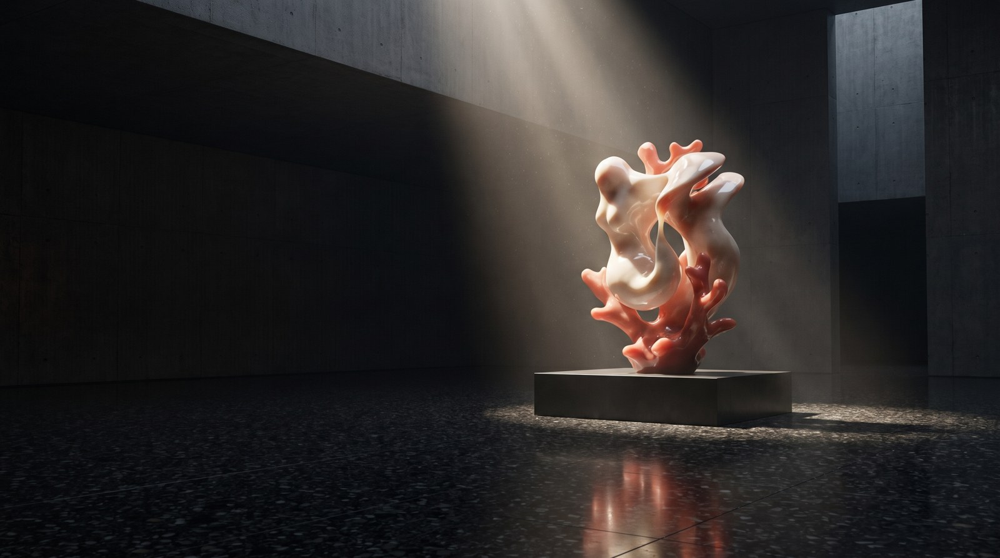
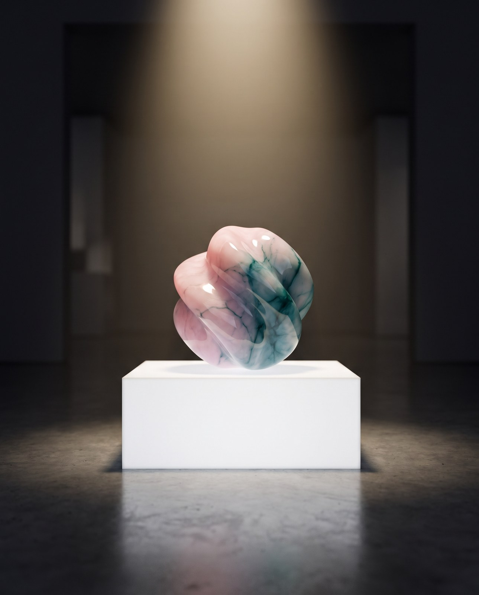
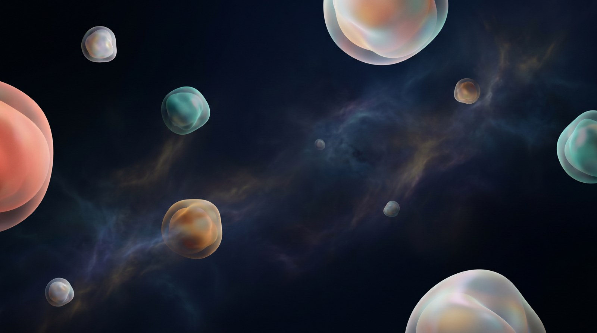
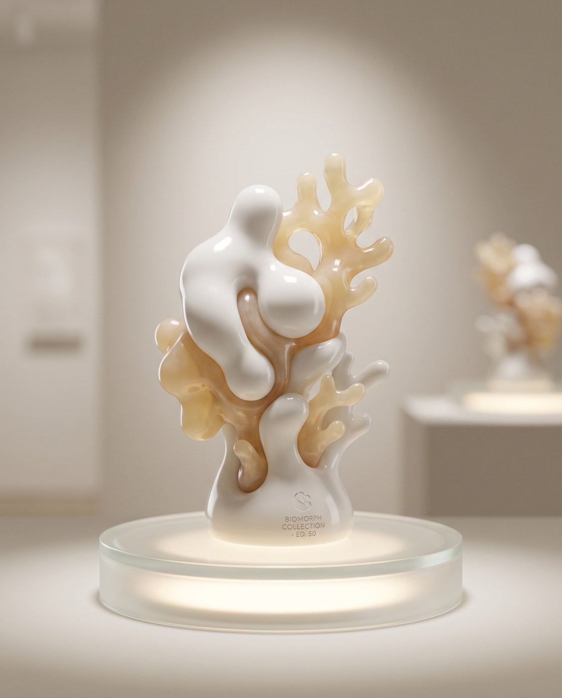
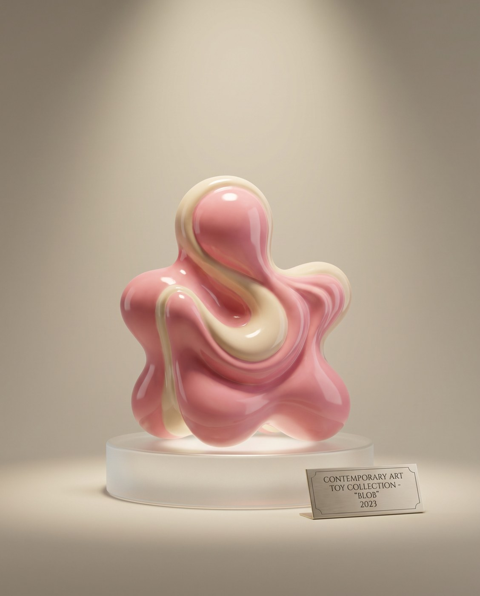
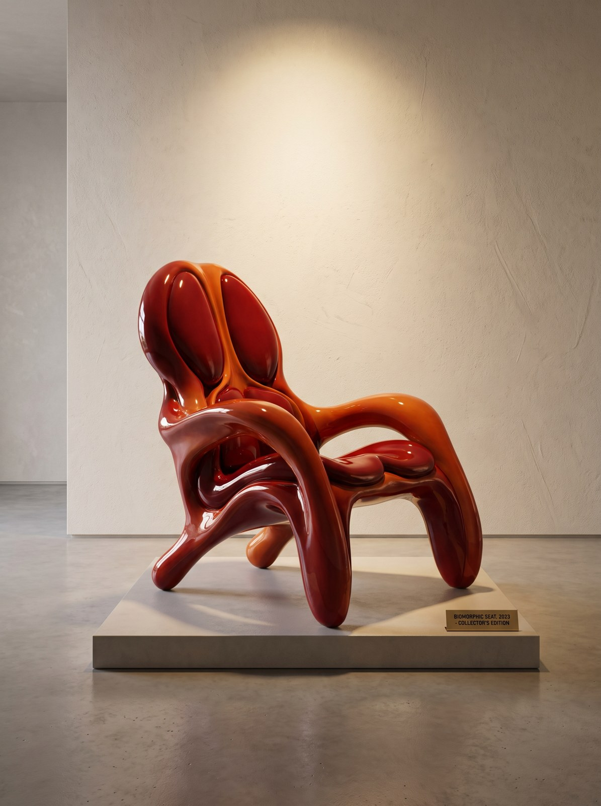
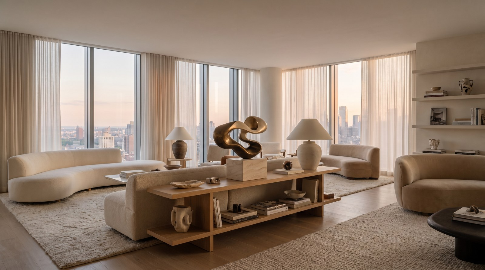

23 планеты. Одна вселенная. Биоморфный сюрреализм — из параллельного мира в пространство коллекционера.
Тарас Желтышев — врач по образованию, ушедший в искусство. Его язык — биоморфный сюрреализм: сплав анатомического и природного. Исследуя этот мир, художник замечает его проблемы и образы и переносит их в наш — в форме скульптур, арт-мебели и объектов.




Ограниченный тираж, номер эдишена, подпись автора и сертификат подлинности. Stargift добавляет кураторский паспорт объекта: планета, история персонажа, год, происхождение — то, что делает арт-объект активом, а не сувениром.


Это концепт подачи: как Stargift представил бы вселенную Yoomoota коллекционеру — с музейным светом, паспортом планеты и интерьерной интеграцией. Готовы собрать полный каталог по вашим работам.